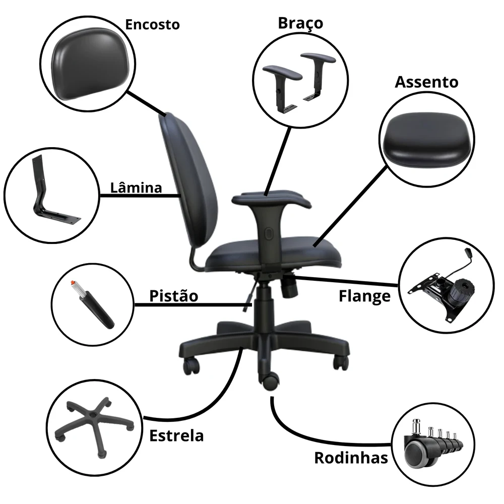

Missão
Vender cadeiras de qualidade e continuar cuidando delas no pós-venda, com conserto, reforma e manutenção. Assim prolongamos a vida útil de cada uma, reduzimos o descarte e ajudamos empresas e o Brasil a cumprir metas ESG de sustentabilidade.
Sobre a Euroform
Desde 2015 vendemos, consertamos e reformamos cadeiras de escritório. E seguimos cuidando de cada cadeira que vendemos, para ela durar mais e pesar menos no planeta.
cuidando de cadeiras de escritório
empresas atendidas
consertos realizados
reformas por ano
Nossa história
A Euroform foi criada em 2015 para atender uma demanda que o mercado deixava de lado: assistência técnica de qualidade para cadeiras de escritório e higienização de estofados.
De lá para cá, crescemos com uma equipe de bons profissionais, materiais de primeira e fornecedores escolhidos a dedo. Hoje damos mais um passo: vender cadeiras novas, de fabricação nacional, e ficar ao lado delas depois da venda.

Missão, visão e valores
Vender cadeiras de qualidade e continuar cuidando delas no pós-venda, com conserto, reforma e manutenção. Assim prolongamos a vida útil de cada uma, reduzimos o descarte e ajudamos empresas e o Brasil a cumprir metas ESG de sustentabilidade.
Ser reconhecida nas principais capitais do Brasil como a referência em cadeiras de escritório: venda, conserto e reforma em um só lugar.
Pós-venda
Muita empresa compra cadeira nova, e quando ela cansa, joga fora. Aqui o caminho é outro: a cadeira que vendemos volta para as nossas mãos sempre que precisar.
Cadeira nova, de fabricação nacional e dentro da norma NR-17.
Você usa com tranquilidade e sabe com quem falar.
Espuma, tecido, pistão, rodinhas, braços, base e mais. No local.
Novo revestimento e novas peças devolvem a cadeira à ativa.
A cadeira segue em uso e não vira descarte antes da hora.
Consertar costuma compensar. Dependendo do defeito e do modelo, você pode economizar até 70% do valor de uma cadeira nova.
ESG na prática
Consertar é a forma mais simples de reduzir resíduos: cada cadeira que continua em uso é uma cadeira a menos no descarte. Por isso o pós-venda faz parte da nossa missão e conversa direto com o ODS 12 da ONU (Consumo e Produção Responsáveis).
Sua empresa tem meta ESG? Cadeira consertada em vez de descartada é uma ação simples de fazer e fácil de acompanhar: você sabe quantas cadeiras manteve em uso.
Falar sobre ESG no escritório Não vendemos certificação ESG nem prometemos números que não conseguimos medir. Falamos de reaproveitamento real, cadeira por cadeira.Nossa meta
Começamos no Rio de Janeiro, em Jacarepaguá. Queremos ser reconhecidos nas principais capitais do Brasil como a marca que vende cadeira boa e cuida dela depois.
Sua empresa fica fora do Rio? Fale com a gente. Vamos avaliar como atender.
Nosso compromisso
Quem sempre compra o mais barato acaba gastando mais, porque a vida útil do produto é bem menor. Por isso, qualidade vem em primeiro lugar, com preço competitivo.
Rua Ana Cristina César, 300
Freguesia, Jacarepaguá (RJ)